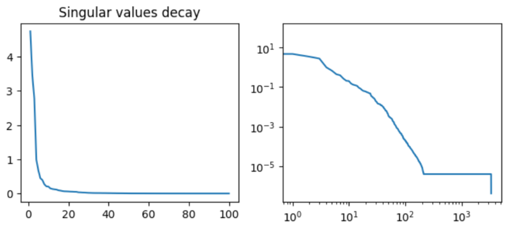
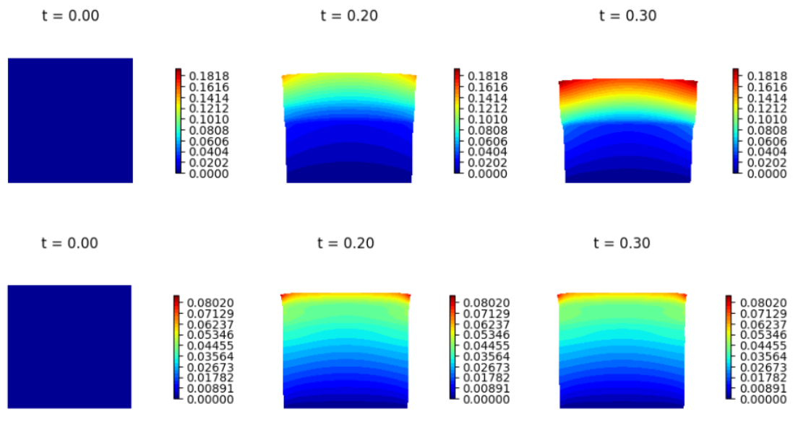
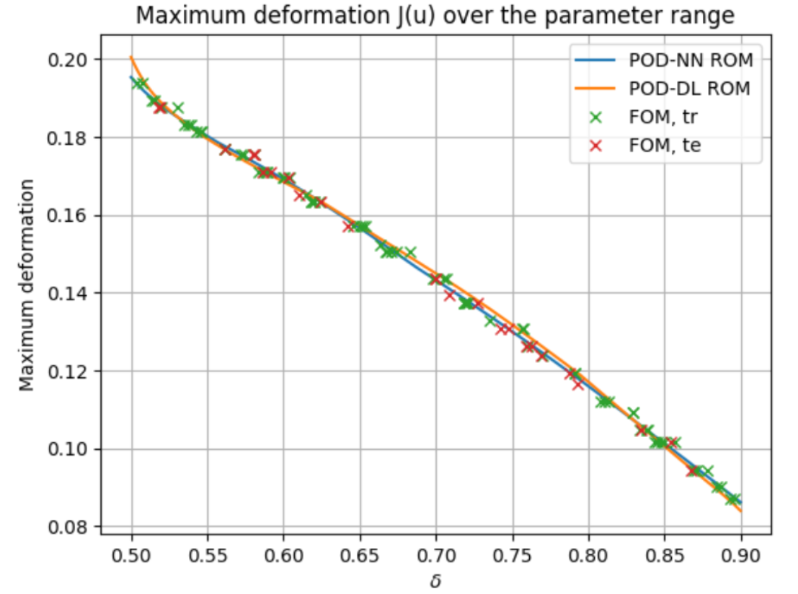
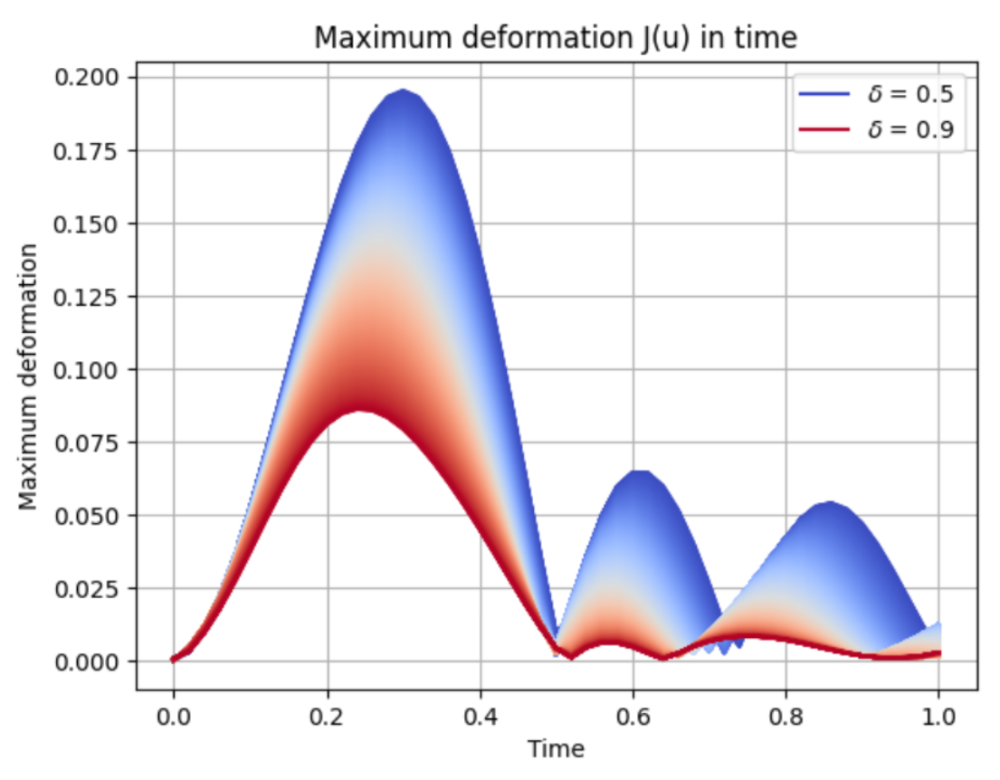

Stunt Training Facility: Floor Design (ROM)

Project Overview
This project tackles the material design for a stunt training facility by developing a time-dependent, parametric Model Order Reduction (MOR) framework. The floor is modeled as a two-layer structure following the equations of linear elasticity, subjected to a localized, dynamic vertical impact exerted by an athlete's foot.
Main Requirements & Tasks
- Time-Dependent FOM: Solve the 2D linear elastodynamics problem using Finite Elements in space (3,362 degrees of freedom) and finite differences in time (51 snapshots per simulation).
- Parametrization: The system is parameterized by a 1D variable representing the relative thickness of the two floor layers, which inherently alters the effective Lamé coefficients across the domain.
- Surrogate Modeling: Train and compare data-driven ROMs including POD-NN and DL-ROM to capture the spatio-temporal evolution of the deformation.
- Performance Evaluation: Ensure the surrogate models achieve a space-time L2 relative error strictly below 2.5% on an unseen testing dataset.
What Was Done
Starting with a dataset of 100 high-fidelity simulations spanning various layer thicknesses, I decomposed the time-dependent problem by treating time as an additional input parameter alongside the physical thickness parameter.


By performing a Singular Value Decomposition (SVD) on the concatenated snapshots, I extracted the dominant Proper Orthogonal Decomposition (POD) modes. I then architected and trained Neural Networks to map the time and thickness parameters onto the reduced subspace coordinates. The resulting DL-ROM pipeline drastically reduced computation time while retaining high physical accuracy, easily meeting the strict 2.5% error margin requirement.

